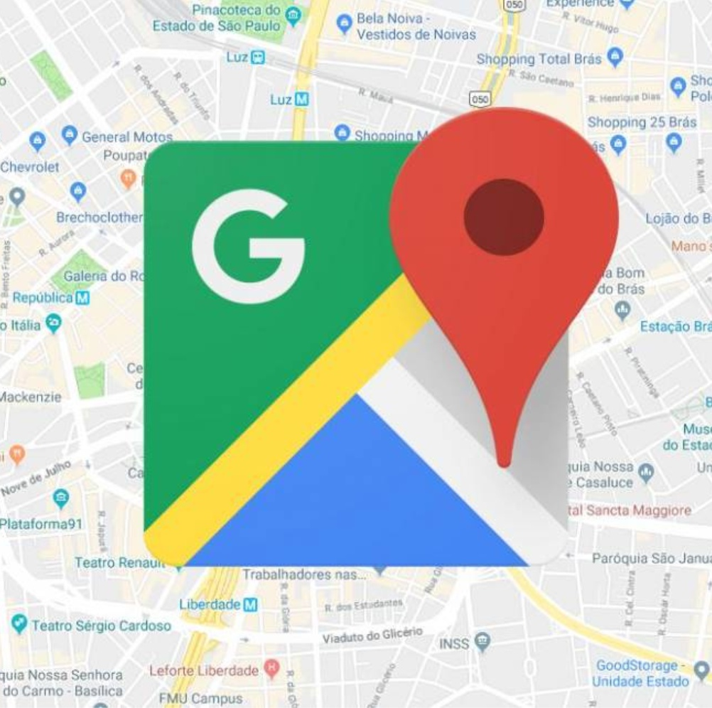
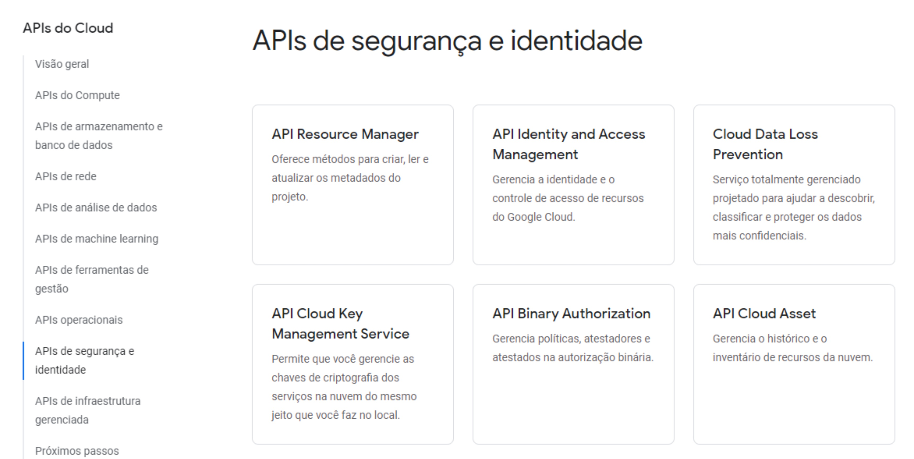

API
-Exemplos de APIs com diferentes linguagens de programação!
- Caroline Noletto
- Fabiana Oliveira
- Filipe Galvão
- Ruan Marques
- Wendel Bomfim
Se quiser, ou√ßa uma m√∫sica enquanto v√™ o site! üòç
Uma definição rápida
Uma API é uma forma de comunicação entre sistemas, sendo assim um conjunto de rotinas e padrões, onde um fornece informações e serviços que o outro pode utilizar. Um exemplo seria pensar na API como um garçom.
Uma API é criada quando uma empresa de software tem a intenção de que outros desenvolvedores, ou empresas de software desenvolvam produtos associados ao seu serviço. Podemos pensar na utilidade do que é API por dois pontos de vista: como produtor ou consumidor.
Alguns Exemplos

Google Maps
Uma das APIs mais populares quando falamos de localização é a do Google Maps. APIs do tipo irão possibilitar que sejam oferecidos serviços e informações para o usuário de acordo com sua localização, trazendo uma experiência muito mais rica. Python é um dos exemplos de linguagem de programação.

Exemplo de APIs em Python do Google Maps
Google Cloud
As APIs do Google Cloud permitem que você automatize os fluxos de trabalho usando sua linguagem preferida. Você usa essas APIs do Cloud com chamadas REST ou bibliotecas de cliente em linguagens de programação conhecidas. O Cloud disponibiliza os APIs para diversas linguagens.
Exemplo de linguagens para o Google Cloud
Exemplo de APIs do Google Cloud
Spotify
Em nossa pesquisa, achamos um exemplo de API do Spotify que uma desenvolvedora utilizou em sua aplicação onde conseguia criar playlists com base em bandas sugeridas pelo usuário. Achamos um exemplo dessa API em React (Biblioteca JavaScript).
Exemplo site do spotify: https://developer.spotify.com/
Outros Exemplos
Uma vasta quantidade de redes sociais também oferecem exemplos de APIs que podemos utilizar para enriquecer a experiência dos usuários em nossas aplicações. Veja o exemplo do Uber que usa o Facebook como ferramenta de login.
As APIs podem funcionar dentro de um site de e-commerce permitindo a utilização dos serviços que envolvem o banco e operadoras que fornecem serviços do cartão. Empresas como Buscapé e Google Shopping e Decolar só existem por conta das APIs.
Achamos um projeto de uma interface em Python para a API REST do Cartola FC. O API destina-se a mapear os objetos no CartolaFC (por exemplo, Atleta, Clube, Liga, Equipe).
Encerrando
A integração de sistemas com utilização de APIs como a conhecemos hoje, baseada em protocolos abertos da web, começou nos Estados Unidos acerca do ano 2000, protagonizada por empresas que, até hoje, são gigantes mundiais em business tecnológicos dos mais variados objetivos.
A função de uma API é, basicamente, facilitar e simplificar o trabalho de desenvolvedores, além de oferecer um padrão para a criação de novas plataformas. Com o uso das APIs, não é necessário criar códigos personalizados para cada função que um programa for executar, o que simplifica a criação de novos aplicativos, softwares e plataformas em geral.